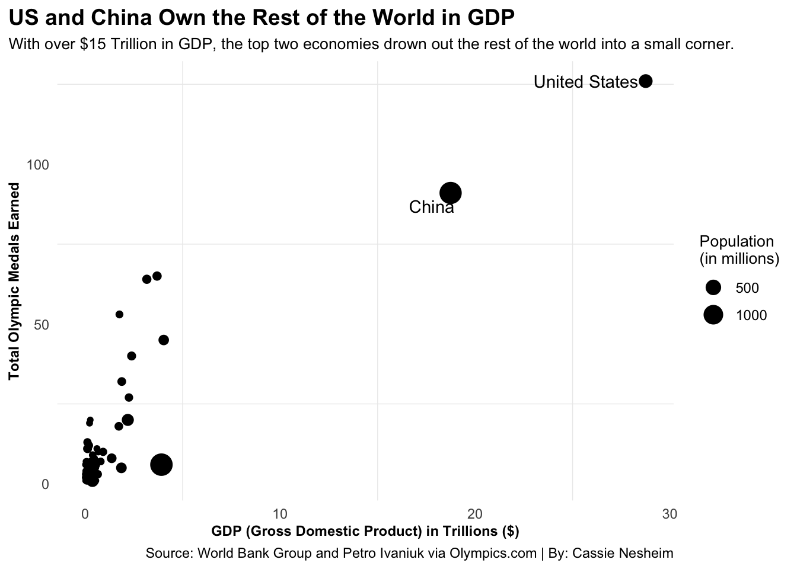
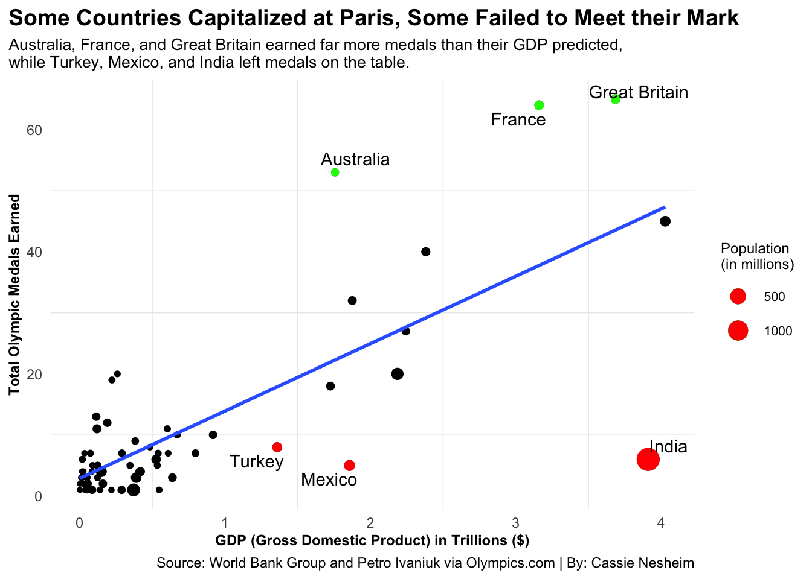
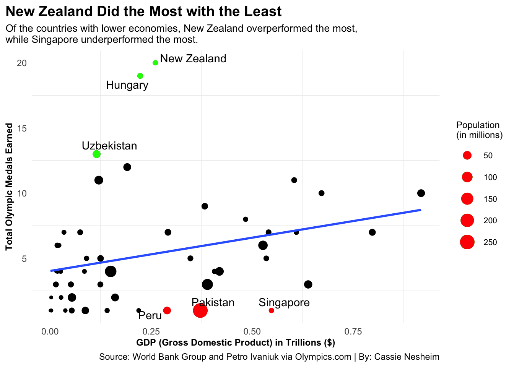
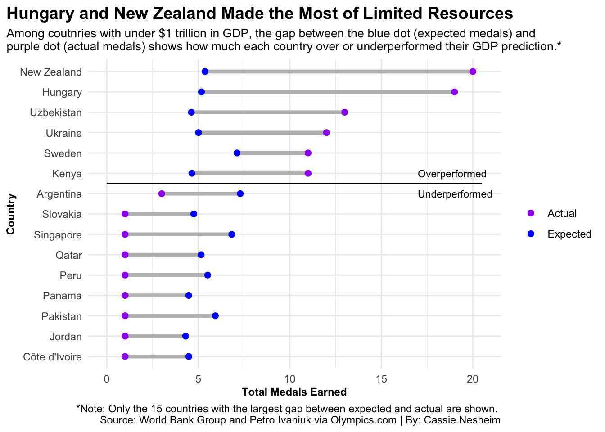
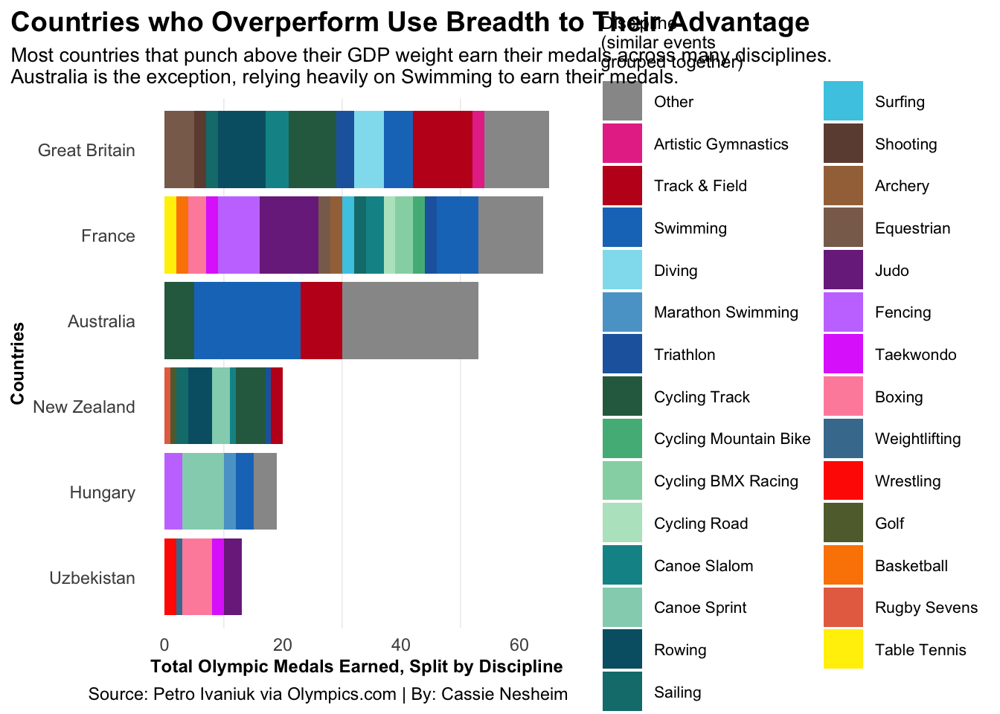
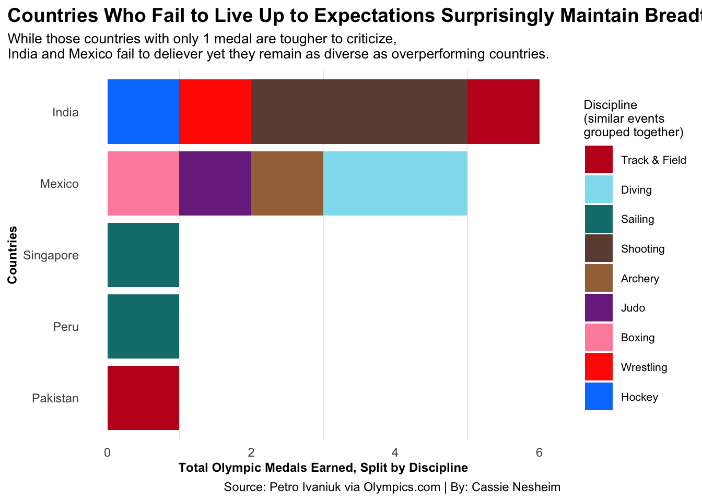

Most everyone knows that the United States tends to dominate medal count at each Olympics, usually landing within the top three countries, if not the top country. This includes leading in gold medals earned and the greater total medals earned. China also typically finds itself in the top countries. What do these countries have in common? Massive GDPs (gross domestic product). Meaning, these countries have large economies, and, in theory, more resources to be able to compete well in Olympic games.
Looking at total medals compared to GDP, it is clear that the US and China are in a league of their own. All the other countries end up in a small corner in the bottom left of the graph, signifying that the US and China have such large GDPs and totals medals earned they overcome the others. So, it is difficult to see how any other countries performed at the Paris 2024 Olympic Games compared to their GDP produced.
Code
medals_gdp_plot <-ggplot() +geom_point(data=medal_gdp_pop_scaled, aes(x=tril_gdp, y=Total, size=mil_pop)) +geom_text_repel(data=medal_gdp_pop_scaled|>filter((tril_gdp>15)), aes(x=tril_gdp, y=Total, label=country)) +labs(title="US and China Own the Rest of the World in GDP", subtitle="With over $15 Trillion in GDP, the top two economies drown out the rest of the world into a small corner.", y="Total Olympic Medals Earned", x ="GDP (Gross Domestic Product) in Trillions ($)",caption="Source: World Bank Group and Petro Ivaniuk via Olympics.com | By: Cassie Nesheim",size ="Population \n(in millions)" ) +theme_minimal() +theme(plot.title =element_text(size =14, face ="bold"),plot.subtitle =element_text(size=10),axis.title.x =element_text(size=9, face ="bold"),axis.title.y =element_text(size=9, face ="bold"),panel.grid.major =element_blank(),legend.title =element_text(size=10),legend.text =element_text(size=9),legend.position ="right",plot.title.position ="plot" )medals_gdp_plot

While it is difficult to see any trends in the other countries, there is slight evidence of a linear relationship between GDP and total medals earned at the Olympics.
When China and the US, the outliers, are removed from the dataset, this linear trend becomes even more noticeable. Having a higher GDP generally correlates with earning more medals at the Olympics. Using this trend, a linear regression line (the blue line) reveals how many medals each country is expected to earn at the Olympics given their GDP.
Code
medal_gdp_pop_filtered <- medal_gdp_pop_scaled |>filter(tril_gdp <7) gdp_filtered_model <-lm(Total ~ tril_gdp, data=medal_gdp_pop_filtered)medal_gdp_pop_filtered <- medal_gdp_pop_filtered |>mutate(resids =residuals(gdp_filtered_model), fitted =fitted(gdp_filtered_model)) |>arrange(desc(resids))top3_countries <- medal_gdp_pop_filtered |>slice_max(order_by=resids, n=3)bottom3_countries <- medal_gdp_pop_filtered |>slice_min(order_by=resids, n=3)labeled_countries <-bind_rows(top3_countries, bottom3_countries)medals_gdp_no_outliers <-ggplot() +geom_point(data=medal_gdp_pop_filtered, aes(x=tril_gdp, y=Total, size=mil_pop)) +geom_point(data=top3_countries, aes(x=tril_gdp, y=Total, size=mil_pop), color="green") +geom_point(data=bottom3_countries, aes(x=tril_gdp, y=Total, size=mil_pop), color="red") +geom_smooth(data=medal_gdp_pop_filtered, aes(x=tril_gdp, y=Total), method="lm", se=FALSE) +geom_text_repel(data=labeled_countries, aes(x=tril_gdp, y=Total, label=country)) +labs(title="Some Countries Capitalized at Paris, Some Failed to Meet their Mark", subtitle="Australia, France, and Great Britain earned far more medals than their GDP predicted, \nwhile Turkey, Mexico, and India left medals on the table.", y="Total Olympic Medals Earned", x ="GDP (Gross Domestic Product) in Trillions ($)",caption="Source: World Bank Group and Petro Ivaniuk via Olympics.com | By: Cassie Nesheim",size ="Population \n(in millions)" ) +theme_minimal() +theme(plot.title =element_text(size =14, face ="bold"),plot.subtitle =element_text(size=10),axis.title.x =element_text(size=9, face ="bold"),axis.title.y =element_text(size=9, face ="bold"),panel.grid.major =element_blank(),legend.key.size =unit(0.75, "cm"),legend.title =element_text(size=9),legend.text =element_text(size=8),legend.position ="right",plot.title.position ="plot" )medals_gdp_no_outliers

Looking at this graph, two things are clear. One, GDP and total medals earned are related. The other, some countries are able to capitalize on their resources and wildly outperformed expectations, while others fail to utilize their resources to their potential and earned significantly fewer medals at the Paris Games than they could have.
India, Mexico, and Turkey were the biggest losers in Paris. Aka, they performed the worst compared to how many medals their GDPs predicted them to earn. They failed to turn their GDP and resources into medals on the biggest stage.
On the other hand, Australia, France, and Great Britain were able to take their resources and explode. They earned significantly more medals than their GDP predicted they would earn. One thing to note is that since France was the host country, they had automatic bids in some disciplines that they might not traditionally qualify athletes in. In other words, they had more opportunities to medal than other countries.
While this model does reduce the data and exclude the extreme outliers like the US and China, it is clear there are still several countries that are below $1 trillion GDP that are being squished to the sidelines. By further analyzing smaller economies, we can see which countries were able to do more with less.
Code
medal_gdp_pop_less_1_tril <- medal_gdp_pop_filtered |>filter(tril_gdp <1)gdp_less_1_tril_model <-lm(Total ~ tril_gdp, data=medal_gdp_pop_less_1_tril)medal_gdp_pop_less_1_tril <- medal_gdp_pop_less_1_tril |>mutate(resids_less1 =residuals(gdp_less_1_tril_model), fitted_less1 =fitted(gdp_less_1_tril_model))top3_less1_countries <- medal_gdp_pop_less_1_tril |>slice_max(order_by=resids_less1, n=3)bottom3_less1_countries <- medal_gdp_pop_less_1_tril |>slice_min(order_by=resids_less1, n=3)labeled_countries_less1 <-bind_rows(top3_less1_countries, bottom3_less1_countries)medals_gdp_less_1_tril <-ggplot() +geom_point(data=medal_gdp_pop_less_1_tril, aes(x=tril_gdp, y=Total, size=mil_pop)) +geom_point(data=top3_less1_countries, aes(x=tril_gdp, y=Total, size=mil_pop), color="green") +geom_point(data=bottom3_less1_countries, aes(x=tril_gdp, y=Total, size=mil_pop), color="red") +geom_smooth(data=medal_gdp_pop_less_1_tril, aes(x=tril_gdp, y=Total), method="lm", se=FALSE) +geom_text_repel(data=labeled_countries_less1, aes(x=tril_gdp, y=Total, label=country)) +labs(title="New Zealand Did the Most with the Least", subtitle="Of the countries with lower economies, New Zealand overperformed the most, \nwhile Singapore underperformed the most.", y="Total Olympic Medals Earned", x ="GDP (Gross Domestic Product) in Trillions ($)",caption="Source: World Bank Group and Petro Ivaniuk via Olympics.com | By: Cassie Nesheim",size ="Population \n(in millions)" ) +theme_minimal() +theme(plot.title =element_text(size =14, face ="bold"),plot.subtitle =element_text(size=10),axis.title.x =element_text(size=9, face ="bold"),axis.title.y =element_text(size=9, face ="bold"),panel.grid.major =element_blank(),legend.key.size =unit(0.75, "cm"),legend.title =element_text(size=9),legend.text =element_text(size=8),legend.position ="right",plot.title.position ="plot" )medals_gdp_less_1_tril
`geom_smooth()` using formula = 'y ~ x'

Analyzing the only the countries with GDPs under $1 trillion and predicting their total medals at the Olympics by their GDPs, it is revealed that New Zealand, Hungary, and Uzbekistan were the lower economies able to capitalize on their resources most. Interestingly, these three countries do not seem to have too high of populations, at least in comparison to the other lower GDP countries. On the contrary, Pakistan is one of the lower economies who underperformed most significantly at the Paris Games, and they have the largest population. So, not only was Pakistan unable to turn its GDP into medals, they also were not able to capitalize on their larger population.
What about other countries of the lower GDP outputs? How do other countries stack up?
Code
dumbbell_data <- medal_gdp_pop_less_1_tril |>slice_max(order_by=abs(resids_less1), n=15)dumbbell_plot <-ggplot() +geom_segment(data=dumbbell_data, aes(y=reorder(country, Total), yend=country, x=fitted_less1, xend=Total), color="grey", linewidth =1.5 ) +geom_point(data=dumbbell_data, aes(y=reorder(country, Total), x=fitted_less1, color="Expected"), size=2 ) +geom_point(data=dumbbell_data, aes(y=reorder(country, Total), x=Total, color="Actual"), size=2 ) +scale_color_manual(name="", values=c("Expected"="blue", "Actual"="purple")) +annotate("segment", x=0, xend=20.5, y=9.5, yend=9.5, linetype="solid", color="black", linewidth=0.5) +annotate("text", x=17, y=10, label="Overperformed", hjust=0, size=3, color="black") +annotate("text", x=17, y=9, label="Underperformed", hjust=0, size=3, color="black") +labs(title="Hungary and New Zealand Made the Most of Limited Resources", subtitle="Among coutnries with under $1 trillion in GDP, the gap between the blue dot (expected medals) and \npurple dot (actual medals) shows how much each country over or underperformed their GDP prediction.*", y="Country", x ="Total Medals Earned",caption="*Note: Only the 15 countries with the largest gap between expected and actual are shown. \nSource: World Bank Group and Petro Ivaniuk via Olympics.com | By: Cassie Nesheim" ) +theme_minimal() +theme(plot.title =element_text(size =14, face ="bold"),plot.subtitle =element_text(size =10, face ="plain"),axis.title.x =element_text(size=9, face ="bold"),axis.title.y =element_text(size=9, face ="bold"),plot.title.position ="plot" )dumbbell_plot

Looking at this graph, we can see that of the countries with a GDP of under $1 trillion, 15 of those who underperformed or overperformed most significantly, only 6 countries overperformed expectations. Hungary and New Zealand jump out, as they overperformed and earned significantly more medals in Paris than their GDP predicted. The other countries either barely overperformed expectations or underperformed and earned less medals than they were expected to based on GDP.
So, we have seen that GDP is an indicator of how well countries will do at the Games. And while some countries are able to use their resources to their full potential, and even earn more medals than they are “supposed to”, others fail to rise to the occasion and perform worse than they should. Do teams who overperform tend to rely on one or two disciplines (sports) to do so? Or do teams who underperform do so because they specialize in only one or two disciplines and fail to compete in other disciplines? Or do teams who overperform do so across many disciplines and teams who underperform also do so across many disciplines?
An analysis of which disciplines the overperforming countries medaled in revealed that, aside from Australia, many countries used breadth to their advantage and medaled across many disciplines.
Code
best_overperformers <-c("Australia", "France", "Great Britain", "New Zealand", "Hungary", "Uzbekistan")best_events <- event_medals |>filter(country %in% best_overperformers) |>group_by(country, discipline) |>mutate(dis_count =n()) |>ungroup() |>group_by(country) |>mutate(discipline =ifelse(dis_count <max(dis_count)*0.20, "Other", discipline)) |>mutate(country_total =n()) |>ungroup() |>mutate(country =reorder(country, country_total)) |>mutate(discipline =factor(discipline, levels =c("Other", "Artistic Gymnastics", "Track & Field", "Swimming", "Diving", "Marathon Swimming", "Triathlon", "Cycling Track", "Cycling Mountain Bike", "Cycling BMX Racing", "Cycling Road", "Canoe Slalom", "Canoe Sprint", "Rowing", "Sailing", "Surfing", "Shooting", "Archery", "Equestrian", "Judo", "Fencing", "Taekwondo", "Boxing", "Weightlifting", "Wrestling", "Golf", "Basketball", "Rugby Sevens", "Badminton", "Table Tennis")))#cycling mountain bike, archery, #rugby sevens, triathlon, cycling bmx racking, cycling road, sailing, #surfing, taekwondo, marathon swimming, golf, basketballdiscipline_colors <-c("Other"="#989898","Artistic Gymnastics"="#e63995","Track & Field"="#c1121f","Swimming"="#1a78c2","Diving"="#90e0ef","Marathon Swimming"="#5ba4cf","Triathlon"="#2166ac","Cycling Track"="#2d6a4f","Cycling Mountain Bike"="#52b788","Cycling BMX Racing"="#95d5b2","Cycling Road"="#b7e4c7","Canoe Slalom"="#0a9396","Canoe Sprint"="#94d2bd","Rowing"="#005f73","Sailing"="#0e7c7b","Surfing"="#48cae4", "Shooting"="#6d4c41","Archery"="#a47148","Equestrian"="#8b6c5c","Judo"="#7b2d8b","Fencing"="#c77dff","Taekwondo"="#e040fb","Boxing"="#ff8fab","Weightlifting"="#457b9d","Wrestling"="#ff2800","Golf"="#606c38","Basketball"="#fb8500","Rugby Sevens"="#e76f51","Badminton"="#ffd166","Table Tennis"="#ffef00")overperformers_bar_chart <-ggplot() +geom_bar(data=best_events, aes(x=country, fill=discipline)) +coord_flip() +labs(title="Countries who Overperform Use Breadth to Their Advantage", subtitle="Most countries that punch above their GDP weight earn their medals across many disciplines. \nAustralia is the exception, relying heavily on Swimming to earn their medals.", y="Total Olympic Medals Earned, Split by Discipline", x ="Countries",caption="Source: Petro Ivaniuk via Olympics.com | By: Cassie Nesheim",fill="Discipline \n(similar events \ngrouped together)" ) +scale_fill_manual(values = discipline_colors) +theme_minimal() +theme(plot.title =element_text(size =14, face ="bold"),plot.subtitle =element_text(size=10),axis.title.x =element_text(size=9, face ="bold"),axis.title.y =element_text(size=9, face ="bold"),panel.grid.major =element_blank(),legend.key.size =unit(0.75, "cm"),legend.title =element_text(size=9),legend.text =element_text(size=8),legend.position ="right",plot.title.position ="plot" )overperformers_bar_chart

While the United States relied on Track and Field and Swimming and Australia relied on Swimming, all the other overperforming teams were able to do so by competing and medaling in a variety of disciplines. This breadth demonstrates how important it is for countries to be able to use their resources to diversify and provide ample opportunities to their people to train and compete in many, many disciplines. While not every country can outperform expectations, those countries who are able to qualify and compete athletes across disciplines seem to do better than their GDP expects them to.
Now, does this principle hold for underperforming teams? In theory, teams who underperformed expectations did so because they were unable to take advantage of resources. If the idea that breadth is a key to success is true, then those teams who underperformed lacked diversity in the disciplines they medaled in.
Code
worst_underperformers <-c("India", "Mexico", "Turkey", "Peru", "Pakistan", "Singapore")worst_events <- event_medals |>filter(country %in% worst_underperformers) |>group_by(country) |>mutate(country_total=n()) |>ungroup() |>mutate(country =reorder(country, country_total)) |>mutate(discipline =factor(discipline, levels =c("Track & Field", "Diving", "Sailing", "Shooting", "Archery", "Judo", "Boxing", "Wrestling", "Hockey")))#cycling mountain bike, archery, #rugby sevens, triathlon, cycling bmx racking, cycling road, sailing, #surfing, taekwondo, marathon swimming, golf, basketballworst_discipline_colors <-c("Track & Field"="#c1121f","Diving"="#90e0ef","Sailing"="#0e7c7b","Shooting"="#6d4c41","Archery"="#a47148","Judo"="#7b2d8b","Boxing"="#ff8fab","Wrestling"="#ff2800","Hockey"="#007efc")underperformers_bar_chart <-ggplot() +geom_bar(data=worst_events, aes(x=country, fill=discipline)) +coord_flip() +labs(title="Countries Who Fail to Live Up to Expectations Surprisingly Maintain Breadth", subtitle="While those countries with only 1 medal are tougher to criticize, \nIndia and Mexico fail to deliever yet they remain as diverse as overperforming countries.", y="Total Olympic Medals Earned, Split by Discipline", x ="Countries",caption="Source: Petro Ivaniuk via Olympics.com | By: Cassie Nesheim",fill="Discipline \n(similar events \ngrouped together)" ) +scale_fill_manual(values = worst_discipline_colors) +theme_minimal() +theme(plot.title =element_text(size =14, face ="bold"),plot.subtitle =element_text(size=10),axis.title.x =element_text(size=9, face ="bold"),axis.title.y =element_text(size=9, face ="bold"),panel.grid.major =element_blank(),legend.key.size =unit(0.75, "cm"),legend.title =element_text(size=9),legend.text =element_text(size=8),legend.position ="right",plot.title.position ="plot" )underperformers_bar_chart

Analyzing underperforming teams is tricky, because since they earned fewer medals than they were expected to, the number of medals is significantly smaller than those countries who overperformed. Of course countries who only medaled once lack significantly in breadth. These countries (like Singapore) have only one discipline. Though, underperforming countries can still be analyzed for their breadth. India and Mexico both earned fewer medals than they were expected to. Interestingly, though, they were both rather diversified in their disciplines. While India relied slightly on Archery and Mexico on Diving, both countries medaled in four separated disciplines.
So, breadth is not a good measure of why countries who underperformed were unable to capitalize on their GDPs. However, one pattern that did emerge was countries with high populations tend to underperform. This was the case for both India and Pakistan. Both countries had the highest populations in their respective graphs and both emerged as one of the worst underperformers.
While breadth may not be a good indicator of why certain countries exceeded expectations and others failed to reach their potential, using GDP and population is an accurate way to discover the countries who over and under performed at the Paris 2024 Olympic Games.
Let’s zoom back out and discover which countries under and over performed according to their GDP at the Paris 2024 Olympic Games when we consider every country with GDP data.
After fitting all of the countries to a linear regression model, we find that France overperformed the most, earning about 42 more medals than they should have according to its GDP. Again, this is with a caveat that France had more opportunities to medal than typical as they were the host country. And, on the other end, India underperformed the most, earning about 19 fewer medals than they should have according to their GDP.
Notably, though, when the United States is included, it comes out as a UNDER perfoming country. Yes, that’s right. Even though the U.S. came out on top and earned the most medals in across all countries in Paris, according to its GDP, they should have earned about 13 more medals than they did.
Code
gdp_pop_model <-lm(Total ~ tril_gdp, data=medal_gdp_pop_scaled)gdp_pop_full <- medal_gdp_pop_scaled |>mutate(resids_full =residuals(gdp_pop_model), fitted_full =fitted(gdp_pop_model)) |>arrange(desc(resids_full))top5_countries_overall <- gdp_pop_full |>slice_max(order_by=resids_full, n=5)bottom5_countries_overall <- gdp_pop_full |>slice_min(order_by=resids_full, n=5)labeled_countries <-bind_rows(top5_countries_overall, bottom5_countries_overall) |>select(country, resids_full) |>arrange(desc(resids_full))labeled_countries |>gt() |>cols_label(country ="Country",resids_full ="Medals Away From Expected" ) |>tab_header(title ="The United States Actually Underperformed at Paris 2024 According to its GDP",subtitle ="The top 5 overperformers from Paris (earned more medals than predicted) in green. \nThe bottom 5 underperformers from Paris (earned fewer medals than predicted) in red." ) |>tab_style(style =cell_text(color ="black", weight ="bold", align ="left"),locations =cells_title("title") ) |>tab_style(style =cell_text(color ="black", align ="left"),locations =cells_title("subtitle") ) |>tab_source_note(source_note ="Source: World Bank Group and ___ via Olympics.com | By: Cassie Nesheim" ) |>tab_style(locations =cells_column_labels(columns =everything()),style =list(cell_borders(sides ="bottom", weight =px(3)),cell_text(weight ="bold", size=12) ) ) |>opt_row_striping() |>opt_table_lines("none") |>tab_style(style =list(cell_text(color ="darkred") ),locations =cells_body(columns = resids_full,rows = resids_full <0) ) |>tab_style(style =list(cell_text(color ="darkgreen") ),locations =cells_body(columns = resids_full,rows = resids_full >0) ) |>tab_style(style =list(cell_fill(color ="lightgreen") ),locations =cells_body(rows = resids_full ==max(resids_full)) ) |>tab_style(style =list(cell_fill(color ="indianred1") ),locations =cells_body(rows = resids_full ==min(resids_full)) ) |>fmt_number(columns = resids_full,decimals =1 )
The United States Actually Underperformed at Paris 2024 According to its GDP
The top 5 overperformers from Paris (earned more medals than predicted) in green. The bottom 5 underperformers from Paris (earned fewer medals than predicted) in red.
Country
Medals Away From Expected
France
42.4
Great Britain
41.0
Australia
37.9
Italy
22.0
Japan
19.5
Pakistan
−7.8
Singapore
−8.6
Mexico
−10.6
United States
−13.0
India
−19.0
Source: World Bank Group and ___ via Olympics.com | By: Cassie Nesheim
When all is said and done, GDP ends up accounting for about 75% of the variation in country medal earnings. This is pretty significant. This means that we can use a country’s GDP to predict how many medals they will earn at future Olympic Games at a pretty accurate rate. Now, as we saw with countries under and over performing, this is not always accurate. However, we can definitely say that GDP has an effect on how many medals countries are able to earn.
Overall, using GDP to discover which countries over- and under-performed at the Paris Games revealed India and the United States as the biggest losers, earning fewer medals than their GDP predicted, and France and Great Britain as the biggest winners, earning significantly more medals than their GDP predicted.